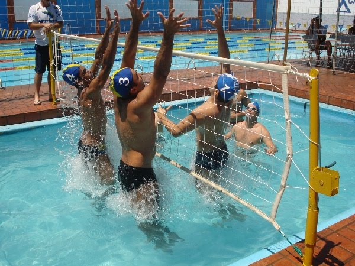
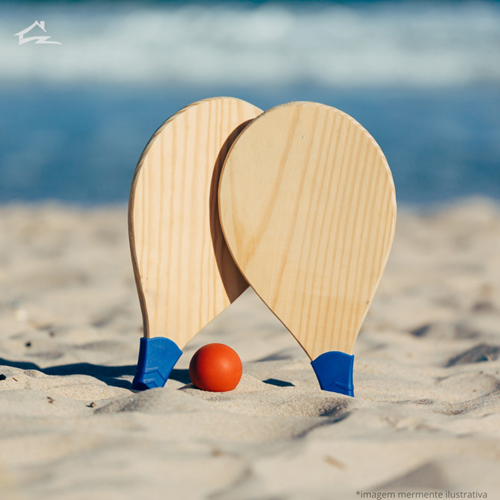

Tão antigos quanto o homem, os esportes são uma das invenções mais benéficas do homem. Além de manter o corpo saudável , ainda auxiliam na criação de uma série de comportamentos positivos, como a humildade, a união, a empatia, dentre outros.
E os esportes com bola são, sem nenhuma dúvida, os mais populares. Mas você sabe a diferença entre alguns deles? É justamente isso que iremos descobrir abaixo.
| Esporte | Origem | Ambiente | Obejetivo | Equipe | ||
|---|---|---|---|---|---|---|
| 1 | |
Baseboll | EUA,1971 | Campo com 1/4 de circulo, de 92 a 108,2m de raia. | Realizar o maior números de corridas. | Nove jogadors em cada time. |
| 2 | |
Beac soccer | 1930 Brasil | Quadra de areia com 35 ou 37 mx 26 ou 27 de largura. | Realizar gols no campo adversário. | Cinco jogadores em cada time. |
| 3 |  | Biribol | 1968 Brasil | Piscina com 4 x 8 x 1,3m. | Derrubar a bola na quadra adversária. | 2 a 4 jogadores por time. |
| 4 |  | Frescobol | 1946 Brasil | Ao ar livre | Manter a bola no ar pelo maior tempo poossível. | Geralmente um contra um. |